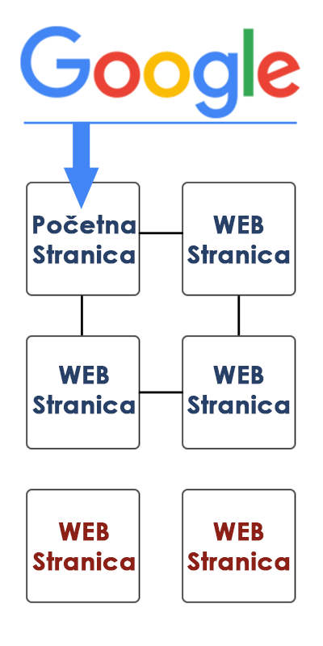

Sadržaj koji se indeksira
Da bi sajt bio pregledniji pretraživačima bitno je da se oslanjamo na HTML tekstualne formate. Sve što nema neki tekst vezan sa sebe, biće ignorisano od strane crawler-a pretraživača; tu spadaju Flash animacije, slike, itd. Da bi se uverili da tekstove koje vide posetioci sajta vide i pretraživači treba ih staviti u HTML tekst na strani.
Takođe se možete osloniti da malo naprednije metode:
Razlike između ljudi i pretraživača
Pretraživač ne vidi Web stranu kao što je mi vidimo. Poželjno je proveriti vaš sajt, da bi videli koji sadržaj pretraživači mogu indeksirati. To možete proveriti korišćenjem Google Cache browsera. Sad ćemo pogledati kako sajt FTN-a u Čačku izgleda posetiocima, a kako pretraživačima.

Kako posetioci vide Web sajt

Kako pretraživač vidi Web sajt
Struktura linkova
Pored sadržaja Web sajta, pretraživači moraju imati pristup i linkovima da bi uopšte mogli da stignu do tih stranica. Veliki broj sajtova prave grešku kada naprave navigaciju kroz sajt kojoj pretraživači ne mogu da pristupe. Zato se prave takozvane strukture linkova optimizovane za pretragu. Ovakva struktura dopušta crawler-ima da pretražuju puteve kroz Web sajt, ovo je veoma bitno za pronalaženje svih stranica Web sajta.
Neki od razloga što pretraživači ne vide linkove mogu biti:
- Crawleri ne vide ili pridodaju malo značaja linkovima u JavaScript-u. Linkove treba pisati u HTML-u
- Linkovi u Flash i Java sadržaju neće biti dostupni crawler-ima, zbog toga ih treba izbegavati
- Ukoliko postoji Submit forma pre ulaska na sajt, pretraživači će verovatno izbegavati taj sajt
- Takođe pretraživači ne mogu korstiti Pretragu kao ljudi, crawleri ne mogu da koriste formu sa pretragom
- Ukoliko stranica ima stotine ili hiljade linkova verovatno neće biti indeksirane
Na ovoj slici vidimo da iako Google pristupa glavnoj strani sajta, on ne može pristupiti dvema crvenih strana jer nisu direktno linkovane sa ostalim stranicama sajta.
Ključne reči
Čitava nauka za pretragu podataka je bazirana na ključnim rečima. Ovo važi i za Online pretragu, ključne reči su osnova u procesu pretrage. Crawler-i koji skeniraju sajtove i indeksiraju sadržaj, pamte ključne reči i smeštaju ih u milione manjih baza podataka, svaka od tih baza podataka je za određenu ključnu reč ili izraz. Ovako ne moraju da pretražuju ogromne baze podataka sa svih podacima sa Web sajtova, već mogu u deliću sekunde dostaviti rezultate pretrage koristeći ključne reči i izraze.
Kao što smo rekli ključne reči su glavne kod internet pregtrage, šta god da unesemo pretraživač će tražiti ključne reči raznih sajtova i izbaciti rezultate koji se najbolje poklapaju sa traženim terminom. Redosled reči i znaci interpunkcije daju pretraživaču dodatne informacije koje pomažu da se dobije pravi rezultat. Pretraživači upoređuju ključne reči sa čitavim sajtom i tako određuju bitnost ključnih reči, da bi vam ključne reči bile bolje rangirane koristite ih često u title tagu i tekstu. Što su vam ključne reči određenije i preciznije imaćete bolji rang.
Mnogi ljudi pokušavaju da prevare SEO tehnike, i u početku internet pretrage te metode su radile. Čuvena metoda je punjenje teksta, pa i celog dokumenta ključnim rečima. U početku sistemi za SEO nisu bili toliko razvijeni pa je ovo prolazilo, međutim vremenom algoritam je napredovao i to više ne funkcioniše. Dr. Edel Garcia je još 2005. godine dokazao da je punjenje teksta ključnim rečima uzaludno, ovde možete pročitati njegovo objašnjenje (na engleskom).
Najbolji sistem je prirodno koristiti ključne reči i ne preterivati. Nije poenta da sve ključne reči budu dobro rangirane, već da glavne ključne reči budu visoko rangirane da bi ljudi preko njih lakše našli vaš sajt.
Optimizacija
Title tag
Title tag je veoma bitan kod SEO. Sve što napišete u title tagu treba biti tačno, koncizno i ne previše dugačko, ključnu reč treba staviti u title tag najamanje jedanput. Stavite bitnije reči na početak taga, korisnici imaju običaj da čitaju prvih par reči izbačenih rezultata, i zato je bitno da ključne i bitne reči stavite na početku title taga. Pretraživač korisnicima prikazuje prvih 75 karaktera, ovo je dobro imati na umu, ali ukoliko imate dugačku ključnu reč ili više njih možete preći ovo ograničenje. Uverite se da je naslov lako čitljiv i poželjno je da u korisnicima izaziva pozitivna osećanja.
Meta tag
Meta tagovi služe da pretraživačima daju informacije o vašem sajtu. Tu postoje i meta "roboti" koji mogu kontrolisati kako se crawler kreće kroz vaš sajt. Meta "roboti" koriste razne atribute za kontrolisanje crawler-a, neki od tih atributa su: noarchive, nosnippet, follow, nofollow, index, noindex, itd..
Meta opis se pojavljuje ispod na pretraživaču ispod title taga. Ključne reči i izrazi u meta opisu nisu bitne, jer ih pretraživač ne gleda. Ovde jednostavno treba napisati neki kraći opis vašeg sajta koji bi možda privukao neke korisnike koji nisu 100% sigurni šta traže. Ovaj tag može biti bilo koje dužine ali pretraživač neće prikazati više od 160 karaktera.
URL
URL predstavlja adresu Web sajta, i ta adresa se vidi među rezultatima pretraživača. URL adresa može pomoći rangiranju Web sajta, ukoliko se traženi termin poklapa sa delom URL adrese, pretraživači će to upamtiti i modifikovati rang sa tim u vidu.
Kod URL-a je bitno da bude čitljiv i što je moguće razumniji za korisnike, takođe poželjno je da u sebi ima informacije vezane za sadržaj strane. Dobar primer URL-a možemo naći na Web sajtu FTN-a u Čačku; ukoliko pristupimo sajtu i odemo na stranicu Osnove studije vidimo da je URL http://www.ftn.kg.ac.rs/studije/osnovne, dakle reči koje imaju smisla i vezane su sadržaj na toj strani. Još jedna stvar, poželjno je za razmak između reči u URL-u koristiti horizontalnu crtu (-) jer drugi znaci mogu biti interpretirani na različite načine (primer: http://www.ftn.kg.ac.rs/studije/raspored-nastave).